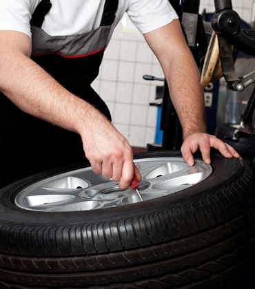
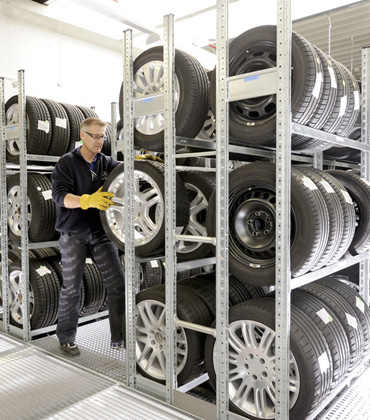
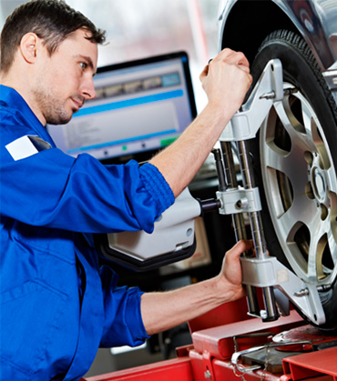
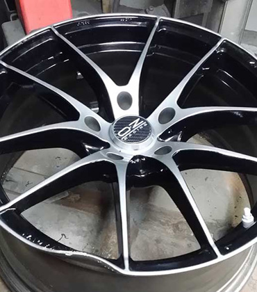
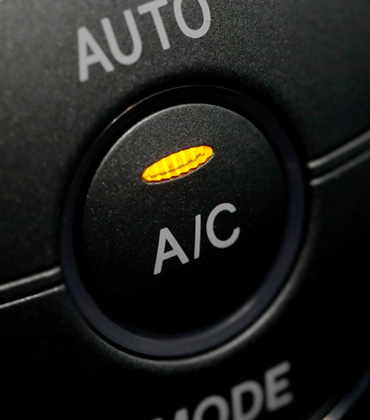

Gume na stanju, montaža isti dan
Unesite dimenziju sa boka gume, pogledajte šta imamo na stanju i rezervišite. Montaža na Ceraku ili Železniku.
Planeta Guma u brojkama
Marke koje prodajemo
Gume svih aktuelnih proizvođača, od povoljnih do premium. Ne vidite svoju marku? Pitajte nas.
Servis i cene
Cene su za putnička vozila sa felnama do 14 inča. Za veće felne, kombi i džip pitajte nas za cenu.





- Montaža i balansiranjenove gume ili gume sa hotela, po točkuod 900 din
- Hotel za gumesezonsko čuvanje, mesečno po gumiod 180 din
- Reglaža trapana aparatu, putnička vozilaod 2.500 din
- Ispravljanje felnialu i čelične felneod 3.000 din
- Servis auto klimeaparatom Robinair AC690PRO5.900 din
- Dezinfekcija klimeWynn's tretman, oko 15 minuta3.900 din
- Pumpanje guma azotompo gumi150 din
- Akumulatoribesplatna provera i ugradnja kupljenogbesplatno
Radimo i mobilni vulkanizer na vašoj adresi u Beogradu, mehaničarske usluge, zamenu ulja i filtera i kompjutersku dijagnostiku.
Gume rezervišete, ostalo poručite
Gume rezervišete online, a mi vas pozovemo da potvrdimo dostupnost i dogovorimo montažu ili besplatnu dostavu. Ulja, akumulatore, felne i opremu poručujete iz prodavnice i preuzimate u radnji.
Česta pitanja
Kako funkcioniše rezervacija guma?
Izaberete gume na sajtu i pošaljete rezervaciju sa imenom i telefonom. Zovemo vas u toku radnog vremena da potvrdimo da su gume tu i dogovorimo termin montaže ili dostavu. Ništa ne plaćate unapred: plaćate u radnji, ili pri preuzimanju ako gume šaljemo kurirom.
Koliko košta montaža i balansiranje?
Za nove gume ili gume sa našeg hotela, od 900 din po točku za felne od 10 do 14 inča, 1.050 din za 15 do 17 inča, 1.550 din za 18 i 19 inča i 2.450 din za 20 inča i više. Na Železniku je vulkanizer 20% jeftiniji.
Da li čuvate gume van sezone?
Da, u našem hotelu za gume, u tamnom i hladnom prostoru. Čuvanje guma ili felni je od 180 din mesečno po komadu, a celih točkova od 210 din.
Da li dostavljate gume?
Gume poručene preko interneta dostavljamo besplatno po celoj Srbiji, obično za 24 do 48 sati. Za ostale artikle dostavu plaća primalac po cenovniku kurirske službe AKS.
Možete li da dođete na moju adresu?
Da, imamo mobilnog vulkanizera koji menja gume na vašoj adresi u Beogradu. Pozovite nas da dogovorimo termin.
Kako mogu da platim?
Gotovinom, karticama Visa, Mastercard, Maestro, Dina i American Express, virmanom, ili na rate: do 12 rata bez kamate karticama Banca Intesa i do 6 rata karticama Komercijalne banke, čekovima i Dina karticom.